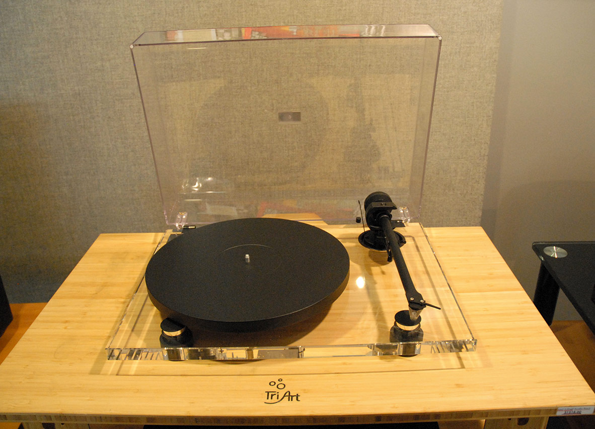
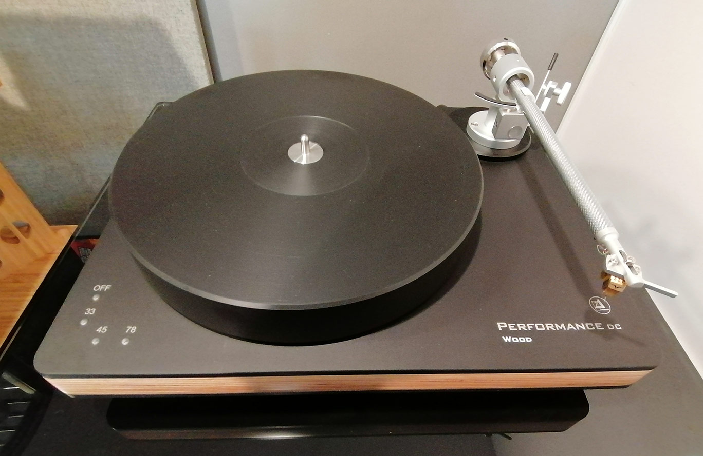
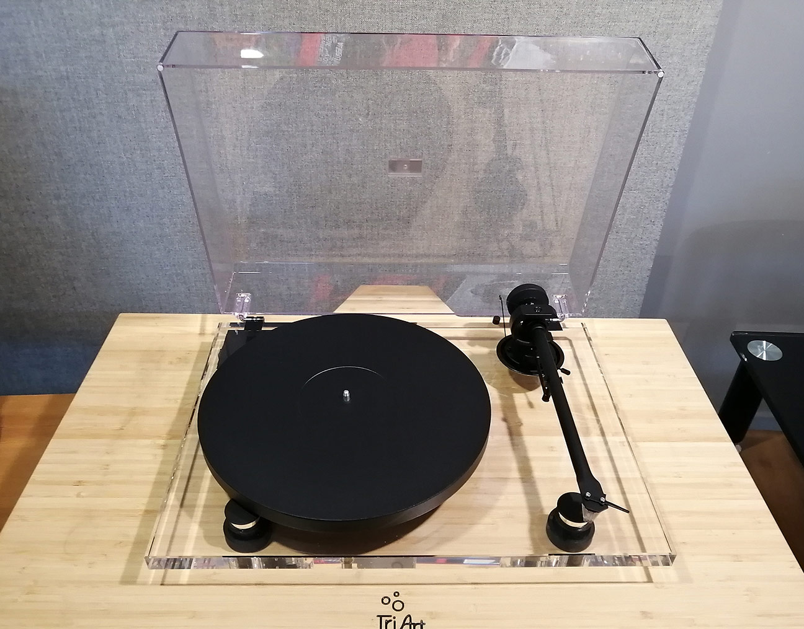

ANALOGUE
Phono Cartridges in Ottawa
A phono cartridge is the transducer at the end of your tonearm — its stylus traces the record groove and converts that motion into the signal your system amplifies. It is the single component with the greatest influence on how your records sound.

Moving Magnet & Moving Coil Cartridges
We stock moving magnet (MM) and moving coil (MC) cartridges from Ortofon, Dynavector, and Gold Note, matched to your tonearm and phono stage and aligned with precision tools. Choosing well means balancing output voltage, compliance, and stylus profile against your system and budget.
Moving magnet vs moving coil: which should you choose?
Both designs read the groove with a stylus on a cantilever; they differ in how they generate the signal. Moving magnet cartridges are higher-output and easy to live with, while moving coil cartridges trade convenience for lower moving mass and, often, greater resolution.
| Attribute | Moving Magnet (MM) | Moving Coil (MC) |
|---|---|---|
| Output voltage | Higher (typically ~2.5–5 mV) | Lower (typically ~0.2–0.5 mV) |
| Phono stage | Standard 47k-ohm MM input | High-gain MC stage with adjustable loading |
| Stylus replacement | Often user-replaceable | Factory rebuild or re-tip |
| Typical cost | More accessible | Premium, higher resolution |
Unsure which suits your deck? Tell us your tonearm and phono stage and we will narrow it down before you audition.
diamond
MM & MC Selection
Moving magnet and moving coil designs to match every arm and phono stage.
straighten
Tonearm Matching
Compliance matched to effective mass for an ideal 8–12 Hz resonance.
center_focus_strong
Precision Alignment
Tracking force, overhang, azimuth, and VTA set with protractors and gauges.
autorenew
Re-Tip & Rebuild
Stylus inspection, replacement, and factory rebuild arranged for you.
Our Selection
Cartridges available to audition and order in our Ottawa showroom. Prices in CAD; expert matching and installation included on request.

Phono Cartridges in Ottawa: A Buyer's Guide
A phono cartridge is the transducer at the end of the tonearm whose stylus reads the record groove and converts it to an electrical signal. It is one of the highest-leverage upgrades in an analogue system: a well-chosen, well-aligned cartridge sets much of a turntable's tonal character, detail, and tracking.
Key Takeaways
- Moving magnet (MM) cartridges offer higher output and replaceable styli; moving coil (MC) offer lower mass and detail but need more gain.
- Match the cartridge's compliance to your tonearm's effective mass so the resonance lands in the ideal 8–12 Hz range.
- Match output voltage to your phono stage's gain, and set loading impedance appropriately.
- A stylus lasts roughly 1,000–2,000 hours; inspect it periodically to protect your records.
- Range: Ortofon Vasari Red $450 to Dynavector XX2 MKII $2,850.

How Do You Match a Cartridge to Your Turntable?

Two compatibilities matter most. First, the tonearm: the cartridge's compliance should suit the arm's effective mass so the arm-and-cartridge resonance falls in the 8–12 Hz window. Second, the phono stage: the cartridge's output must match its gain — MC cartridges need considerably more gain than MM — with loading impedance set to taste. Tell us your turntable and electronics and we will recommend a cartridge that pairs well with both.
How Long Does a Stylus Last, and Can It Be Replaced?

A typical stylus lasts roughly 1,000 to 2,000 hours, varying with stylus profile, tracking force, and record cleanliness. A worn stylus dulls the sound and can damage records, so periodic inspection pays off. Many MM cartridges let you slide on a fresh stylus assembly, while most MC cartridges require a factory rebuild or replacement — both of which we can arrange.
Our Cartridges at a Glance
| Model | Brand | Price (CAD) |
|---|---|---|
| Vasari Red | Ortofon | $450 |
| 20X2 Low Output | Dynavector | $1,450 |
| Donatello Gold | Gold Note | $1,600 |
| XX2 MKII | Dynavector | $2,850 |
Choosing and fitting a cartridge is exacting work. Get in touch and we will recommend the right model for your arm and phono stage — and set it up with precision tools to protect your collection.
Frequently Asked Questions
Expert guidance on choosing, matching, and maintaining the right cartridge for your turntable.
What is the difference between moving magnet (MM) and moving coil (MC) cartridges? expand_more
In a moving magnet cartridge, tiny magnets on the cantilever move between fixed coils; MM designs offer higher output, work with standard 47k-ohm phono inputs, and usually have user-replaceable styli. Moving coil cartridges reverse this, with lightweight coils moving in a fixed magnetic field, which lowers moving mass and can reveal greater detail — but they need a capable MC phono stage and are not user-rebuildable. The best choice depends on your phono stage, budget, and sonic priorities.
How do I match a cartridge to my tonearm and phono stage? expand_more
Two factors matter most. First, tonearm compatibility: the cartridge's compliance should suit your tonearm's effective mass, keeping the arm-and-cartridge resonance in the ideal 8–12 Hz range. Second, phono stage compatibility: the cartridge's output voltage must match your phono stage's gain (MC cartridges need significantly more gain than MM), and loading impedance should be set appropriately. We are happy to review your turntable and electronics and recommend a cartridge that pairs well with both.
How long does a stylus last, and can it be replaced? expand_more
A typical stylus lasts roughly 1,000 to 2,000 hours of playback, though this varies with stylus profile, tracking force, and record cleanliness. A worn stylus dulls the sound and can damage your records, so periodic inspection is worthwhile. Many moving magnet cartridges allow you to simply slide on a new stylus assembly, while most moving coil cartridges require a factory rebuild or replacement, which we can arrange for you.
Why does proper setup and alignment matter so much? expand_more
Even an excellent cartridge will underperform if it is not set up precisely. Tracking force, anti-skate, overhang and zenith angle, azimuth, and vertical tracking angle all affect how accurately the stylus reads the groove. Correct alignment minimizes distortion and groove wear while delivering proper tonal balance and soundstage. We use precision tools and gauges to dial in each parameter and protect your record collection.
Explore Further